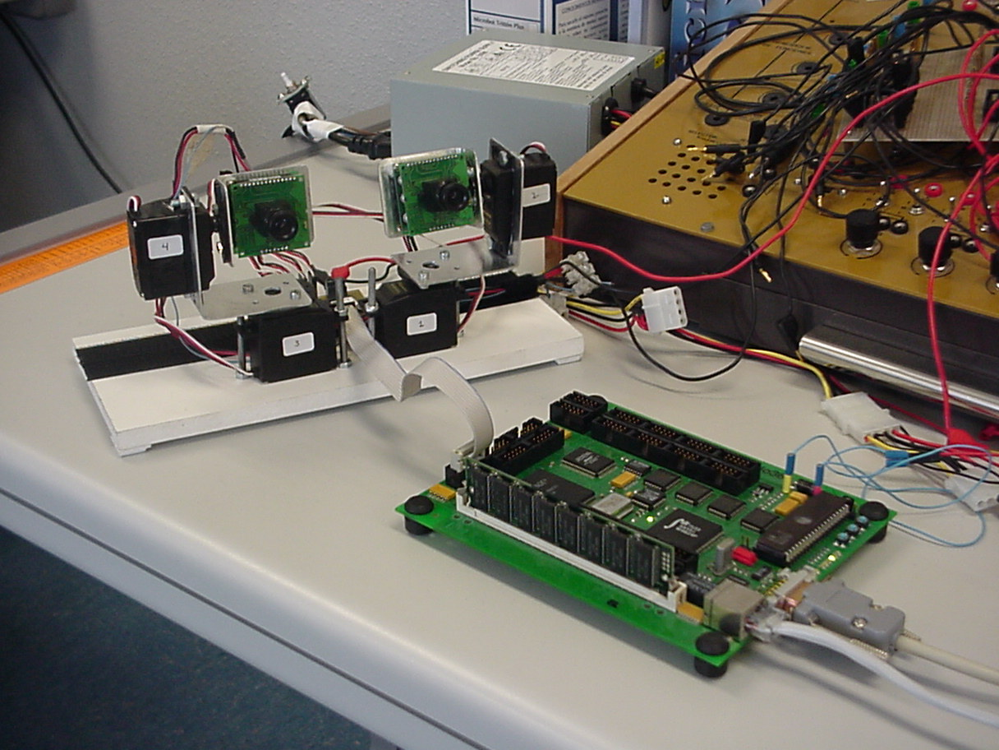

| PROYECTO LABOBOT: Control de servos a traves de una FPGA |
INTRODUCCION
Proyecto desarrollado para la asignatura de doctorado "Codiseño de Sistemas Software/Hardware avanzados", curso 2001-2002, impartido en la E.T.S de Informatica de la UAM, por los profesores: D. Francisco Gómez Arribas , D. Javier Martínez Rodríguez, Jean-Pierre Deschamps, Jose Ignacio Martínez, Sergio López-BuedoSe ha trabajado con la tarjeta de desarrollo LABOMAT que incorpora un microprocesador 68360 y una FPGA XC4013E de Xilinx, entre otras cosas.
Se ha desarrollado una unidad de PWM en VHDL, para el control de los servos y como aplicacion practica se mueve un sistema constituido por dos minicamaras conectadas a dos servos cada una. El software esta en C y permite reproducir una serie de secuencias programadas.
Aqui se muestra una foto de las minicamaras conectadas al sistema de desarrollo

y aqui hay una ANIMACION del movimiento de las camaras.
AUTOR:
Juan Gonzalez Gomez. Marzo-2002. Proyecto bajo licencia GPL.
PARTE HARDWARE La unidad PWM diseñada permite posicionar servos del tipo Futaba 3003 o compatibles, utilizados en la construccion de robots articulados. Para la aplicacion de las minicamaras se han usado 4 unidades PWM para controlar los 4 servos, pero se podrian controlar hasta 28.
Descripción en VHDL La entidad superior es el fichero perif_access.vhd en el que se implementa la interfaz entre la CPU y la FPGA, asi como 4 unidades de PWM y un divisor de la frecuencia del reloj (prescaler) para conseguir la frecuencia necesaria de trabajo. El sistema necesita un reloj de 409.600 Hz de frecuencia para generar el PWM correctamente.
La FPGA esta "mapeada" en el mapa de memoria de la CPU. La CPU "ve" la FPGA como constituida por 1 registro de 32 bits en la memoria. Cada byte de este registro indica la posicion en la que se debe situar cada uno de los 4 servos. Toda esta circuiteria se encuentra en la FPGA, descrita con VHDL.
Configuración de la FPGA (bitstream) Tomando como base el código anterior y empleando las Herramientas Foundation de Xilinx se realiza la síntesis, place & route y generación del bitstream de configuración de la FPGA.
Salvo el proceso de Sintesis, todo el diseño de ha desarrollado bajo el sistema operativo LINUX. Xilinx ha anunciado que pronto sacara al mercado herramientas de Sintesis para LINUX. De momento hay que utilizar WINDOWS.
PARTE SOFTWARE El programa de prueba permite que las minicamaras sigan dos secuencias de movimiento diferentes. El procesador accece a las unidades de PWM de la FPGA como si fuese un periférico en el que hay mapeado un registro de 32 bits en la direccion 0x16000000. Los 8 bits de menor peso especifican la posicion del servo 1, los siguientes 8 bits la del servo 2, los siguientes la del 3 y los 8 bits de mayor peso la del 4.
DOWNLOAD
FICHEROS PARA DESCARGAR
labobot.pdf(432 KB) Documentacion completa del proyecto labobot.tgz(2.6MB) Fuentes del documento labobot, para lyx y dibujos para Xfig labobot_vhd.zip(5KB) Programas fuente en VHDL labobot_hex.zip(7KB) Fichero de configuracion de la FPGA (bitstream) (FPGA XC4013E) labobot.c(7 KB) Programa que envia las secuencias a la FPGA. Especifico para la tarjeta LABOMAT labobot.mpg (344 KB) Vídeo del movimiento de las 2 minicámaras
CREDITOS:
- Andres Prieto-Moreno Torres es el autor original de la estructura mecanica de las minicamaras y los servos y que he utilizado como aplicacion.
- Iván González es el autor original del programa perif-access.vhd, que yo he adaptado para este proyecto.
AGRADECIMIENTOS
- A Ivan Gonzalez, por su ayuda en el manejo de la tarjeta LABOMAT y del entorno Foundation. Tambien me ha ayudado a depurar los programas en VHDL. Yo nunca habia programado en este lenguaje y su ayuda ha sido muy valiosa. ¡Gracias!
- A Andrés Prieto-Moreno Torres por dejarme la estructura mecánica. ¡Gracias!
- A Sergio Lopez-Buedo por ser una "maquina" de resolver problemas y tener siempre tiempo para ayudarte. Me ha ayudado mucho en mis primeros pasos con Foundation y VHDL. ¡Gracias!
- A Gustavo Daniel Sutter por instalarme desinteresadamente el entorno Foundation de Xilinx en el portatil, asi como otras herramientas muy utiles. ¡Gracias!